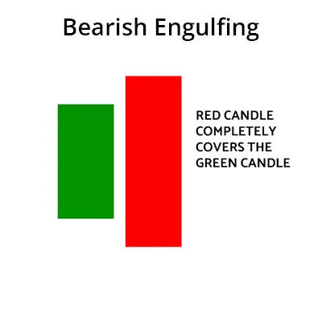
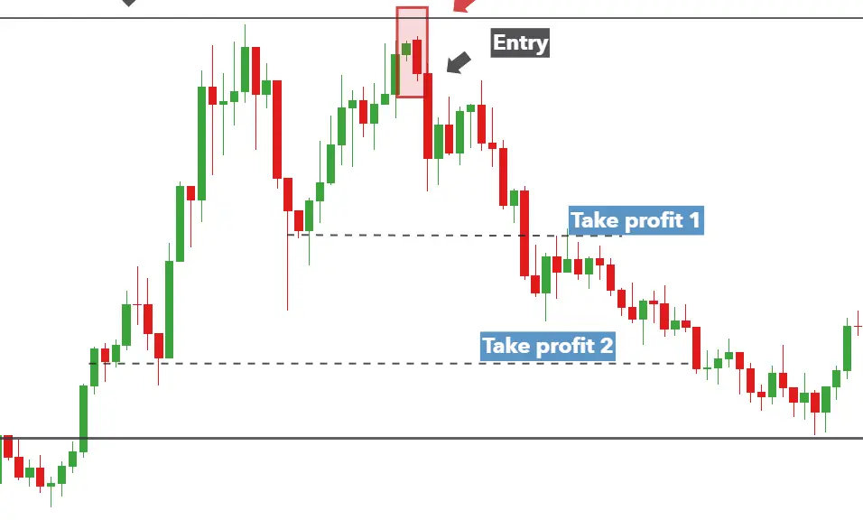

Das Bearish Engulfing Pattern ist ein Handelsmuster, das auf das Fehlen eines Aufwärtstrends
und einen Hinweis auf einen Abwärtstrend im Aktienmarkt hindeutet. Dieses Muster wird
von zwei Kerzenleuchtern gebildet. Der erste Kerzenleuchter ist ein langer aufwärtsgerichteter
Kerzenleuchter, und der zweite Kerzenleuchter ist ein kleiner abwärtsgerichteter Kerzenleuchter,
der den ersten Kerzenleuchter komplett umschließt.
Das Bearish Engulfing Pattern ist ein starkes Signal für einen Abwärtstrend. Wenn dieses Muster
beobachtet wird, kann der Handel im Aktienmarkt mit einer abwärts gerichteten Tendenz
durchgeführt werden.
